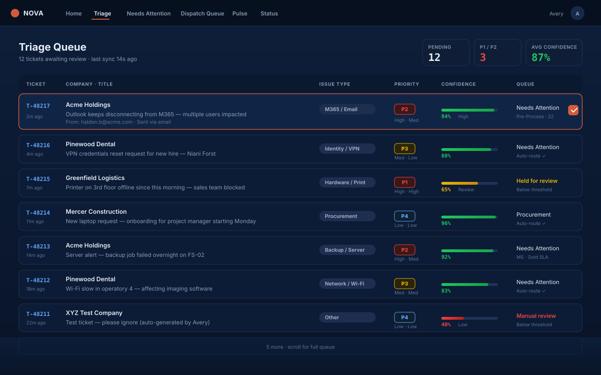
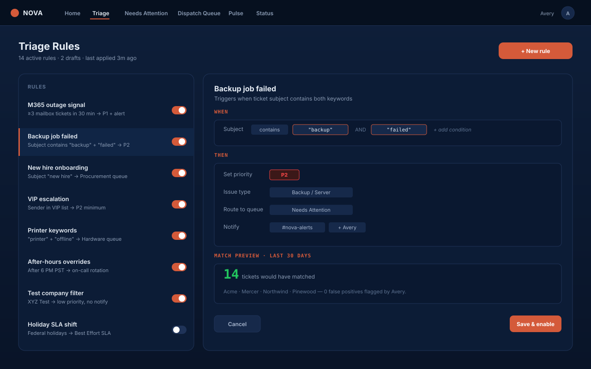
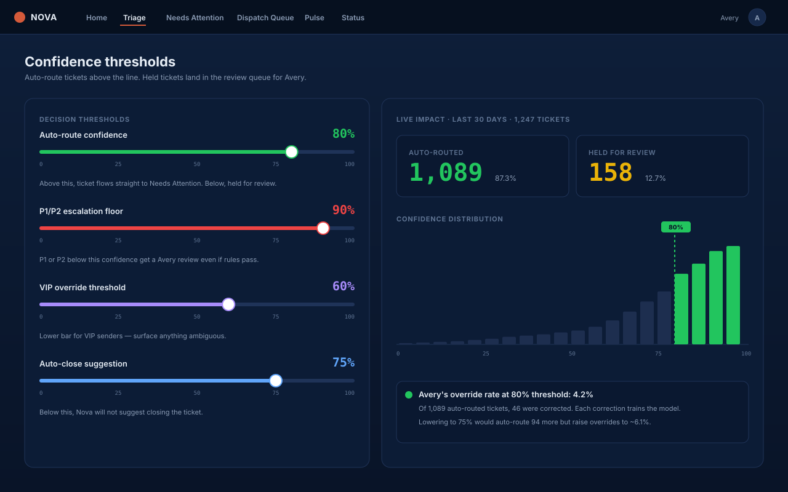

Every new Autotask ticket gets a suggested priority, queue, type, issue and category — before your dispatcher sees it. Each suggestion comes with reasoning attached. One click to accept, one click to override.

Nova checks Autotask every 30 seconds during business hours and less often overnight. New tickets get picked up before your dispatcher refreshes.
The ticket, its contact and recent history get read in one pass. Out comes priority, queue, type, issue and category — with reasoning and a confidence level.
Suggestions land in a clean review list with the AI's reasoning visible. One click to accept, or correct any field first. Every correction is recorded and feeds the learning loop.
Nothing about Nova's calls is opaque. Each ticket card surfaces the reasoning the AI used — what signals in the subject, body, or contact history led to the priority, the queue, the category. Your dispatcher reads the reasoning, agrees or disagrees, and clicks once. The decision and the override (if any) are logged.

Nothing reaches Autotask until a person accepts it. You set the confidence levels that flag a suggestion for a closer look, sensitive tickets ask for extra confirmation, and an accuracy report shows how often the AI agrees with your team.

Dispatchers spend most of a Monday morning sorting overnight tickets — reading subjects, guessing priority, picking the right queue. Nova does that work the moment a ticket hits Autotask. Your dispatcher opens their laptop and the queue is already organized. The job becomes deciding, not sorting.
We built this for ourselves first. At our parent MSP, triage went from a morning ritual to a few minutes of confirmations.
Numbers vary with ticket volume and your override rate. Our own numbers are from February to October 2026.
Send a CSV of last week's tickets. We'll run them through Nova on a call and walk through the calls — what it got right, what it got wrong, the reasoning on each.